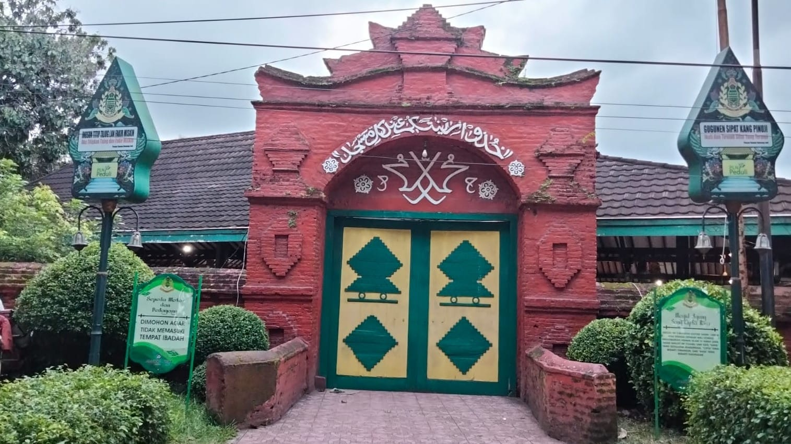
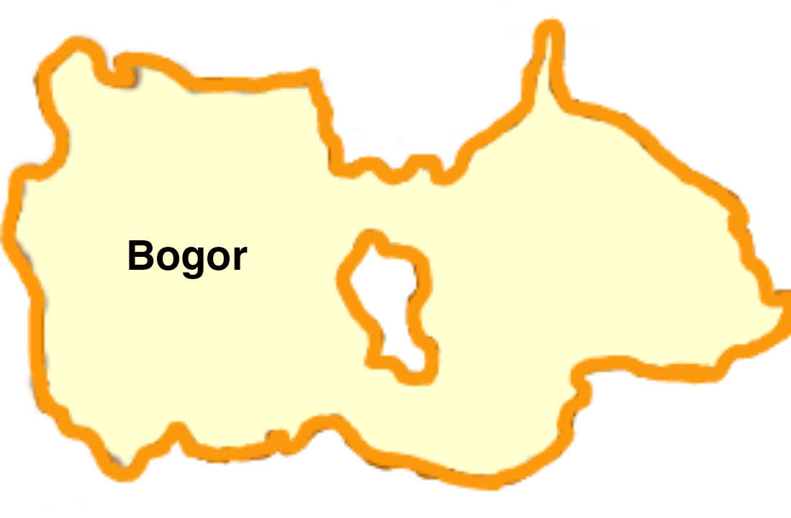
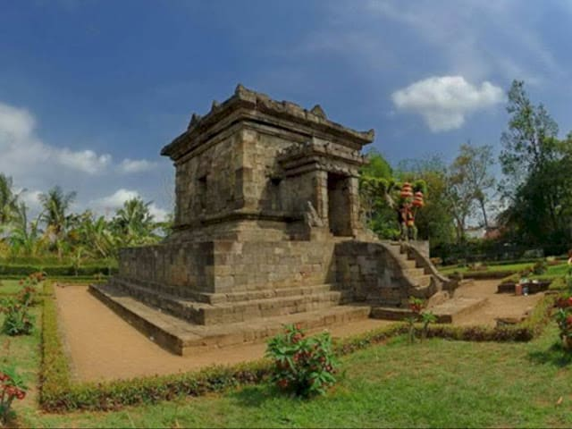
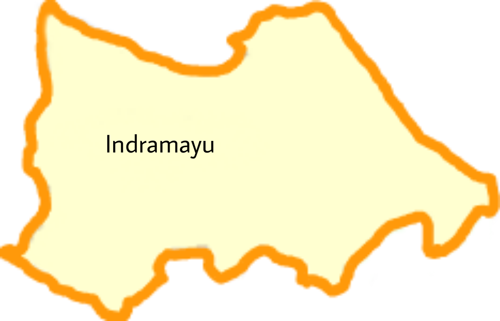
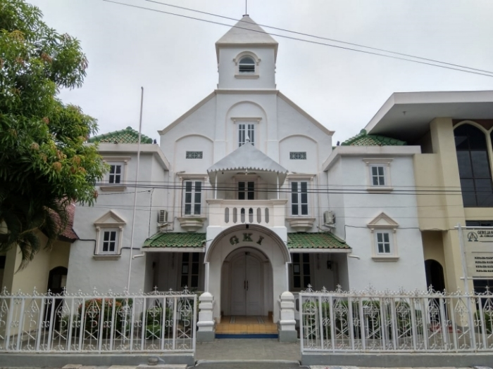
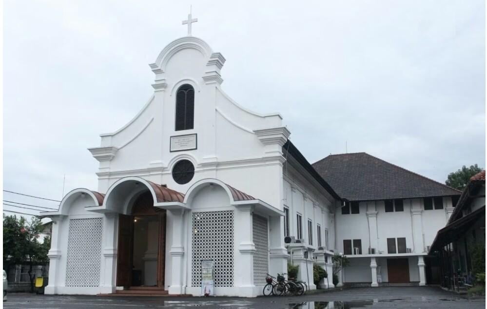

TEMPAT IBADAH AGAMA ISLAM,HINDU-BUDHA,PROTESTAN,KHATOLIK PERTAMA DI JAWA BARAT
Islam (Cirebon)
Cirebon


Tempat Ibadah Agama Islam Pertama di Jawa Barat
Agama Islam pertama kali ditempatkan di cirebon pada abad ke 15, dan didirikannya pada tahun 1498 Masehi, dan disebut dengan MASJID AGUNG SANG CIPTARASA.
Penganut agama islam pertama kali dan yang pernah datang dan tinggal di jawa barat, yakni Haji Purwa pada tahun 1337 Masehi.
Hindu-Budha (Bogor)
Bogor


Tempat Ibadah Agama Hindu-Budha Pertama di Jawa Barat
Agama Hindu-Budha pertama kali ditempatkan di bogor pada abad ke 4, dan didirikannya pada abad ke 5 yang disebut dengan KERAJAAN TARUMANEGARA.
Protestan (Indramayu)
Indramayu


Tempat Ibadah Agama Kristen Protestan Pertama di Jawa Barat
Agama Kristen Protestan pertama kali di tempatkan di indramayu pada abad ke 19 dan didirikannya pada tahun 1858, yang disebut dengan GKI (Gereja Kristen Indonesia).
Khatolik (Cirebon)
Cirebon

Tempat Ibadah Agama Kristen Khatolik Pertama di Jawa Barat
Agama Kristen Khatolik pertama kali ditempatkan di cirebon pada tahun 1878, dan didirikannya pada tahun 1880 masehi. yang di sebut dengan GEREJA SANTO YUSUF CIREBON.